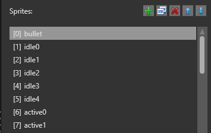
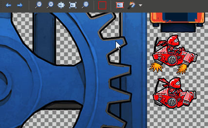

Edit sprites
Warning
Приносим свои извинения за неудобства. Для этой страницы нет перевода на русский язык. Она будет отображаться на английском языке.
Beginner Designer
After you import a sprite sheet, you can use the dedicated Sprite Editor to select sprites within the sprite sheet.
You can also edit sprite properties in the Property Grid like any other asset.
Open the Sprite Editor
To open the Sprite Editor, in the Asset View, double-click the sprite sheet asset.
The sprite sheet opens in the Sprite Editor.

Set sprite sheet type
You can set whether the sprite sheet contains gameplay sprites (Sprite2D) or UI sprites (UI). This has no effect on how the sprite is rendered at runtime, but lets you set slightly different properties, described under Sprite properties below. You can change the sprite sheet type any time.
Add a sprite
Click the Add empty sprite button.
Game Studio adds a empty sprite to the list.
In the Property Grid on the right, in the Source field, specify the sprite sheet that contains the sprite.
Tip
If you want to create a new sprite from the same sprite sheet as other sprites in the list, it's often faster to duplicate an existing sprite. To duplicate a sprite, select it and click Duplicate selected sprites or press Ctrl + D.
Sprite list
The Sprite Editor lists the sprites in your project on the left. Each sprite has an index number; the first has the index [0], second has index [1], and so on. You can use these indexes in your scripts (see Use sprites).

To change the order (and index number) of sprites, use the  (Move selected sprite up/down) buttons. For example, if you move [1] Sprite down, it becomes [2] Sprite.
(Move selected sprite up/down) buttons. For example, if you move [1] Sprite down, it becomes [2] Sprite.
To rename a sprite in the list, double-click it and type a new name.
Set the texture region
You create sprites by defining rectangular texture regions in the sprite sheet.

There are three ways to do this: by using the Magic Wand tool, by setting the edges of the region manually, or by specifying the pixel coordinates in the sprite properties.
Use the Magic Wand
The Magic Wand selects the texture region around a sprite automatically. This is usually the fastest way to select sprites.

To select or deselect the Magic Wand, click the icon in the Sprite Editor toolbar, or press the M key.

To choose how the Magic Wand identifies texture regions, use the drop-down list in the toolbar.

Transparency: The Magic Wand treats the edges of the non-transparent regions as the edges of the texture region. For example, if the sprite is surrounded by transparent space, it sets the texture region at the edge of the transparent space.
Color key: The Magic Wand identifies texture regions using the color set under Color key in the Sprite Editor. For example, if the sprite is surrounded by absolute black (#FF000000), and you set absolute black as the color key, the Magic Wand sets the texture region at the edge of the absolute black space.
Set texture region manually
You can drag the edges of the texture region and reposition the region manually.
Set the texture region in the Property Grid
You can define the pixel coordinates of the texture region in Property Grid under Texture Region. X is the left edge, Y is the top, Z is the right, and W is the bottom.
Use entire sprite sheet for the sprite
If you want to use the entire sprite sheet image for the sprite, you can do this quickly by clicking Use whole image for this sprite in the toolbar. This is useful when you have only one sprite in a sprite sheet.

Set transparency
By default, Stride treats transparent areas of the sprite sheet as transparent at runtime. Alternatively, you can set a key color as transparent. To do this, select Use color key and define a color. For example, if you set absolute black (#FF000000), areas of absolute black are transparent at runtime.

You can also use the color picker tool to select a color from the sprite sheet.

Sprite properties
You can set the properties of individual sprites in the Property Grid.

| Property | Description |
|---|---|
| Source | The path to the sprite sheet |
| Name | The name of this sprite. You can also edit this by double-clicking a sprite in the sprite list in the Sprite Editor |
| Texture region | The region of the sprite sheet used for this sprite |
| Pixels per unit | The number of pixels representing a unit in the scene. The higher this number, the smaller the sprite is rendered in the scene |
| Orientation | If you select Rotated90, Stride rotates the sprite 90 degrees at runtime |
| Center | The position of the center of the sprite, in pixels. By default, the center is 0, 0. Note: this property is only available if the sprite sheet type is set to Sprite2D in the Sprite Editor. |
| Center from middle | Have the value in the Center property represent the offset of the sprite center from the middle of the sprite. Note: this property is only available if the sprite sheet type is set to Sprite2D in the Sprite Editor. |
| Borders | The size in pixels of the sprite borders (areas that don't deform when stretched). X is the left border, Y is the top, Z is the right, and W is the bottom. For more information, see Set sprite borders. Note: this property is only available if the sprite sheet is set to UI on the left. |
Sprite sheet properties
You can also set the properties for the entire sprite sheet asset. To access the properties:
select the sprite sheet asset in the Asset View and set the properties in the Property Grid, or
in the Sprite Editor, click Sprite sheet properties.

Many of the properties are the same as texture properties.
| Property | Description |
|---|---|
| Sheet Type | Specify whether this sprite sheet is used for 2D sprites or UI elements. If you select Sprite sheet for UI, you can define sprite borders in the sprites. |
| Color Key Color | The color used for transparency at runtime. This is only applied if Color Key Enabled is selected below |
| Color Key Enabled | Use the color set in the Color Key Color property for transparency at runtime. If this isn't selected, the project uses transparent areas of the sprite sheet instead |
| Compress | Compress the texture to a format based on the target platform. The final texture size will be a multiple of 4. |
| ColorSpace | The color space for the sprites in the sprite sheet (Auto, Linear, or Gamma) |
| Alpha | The texture alpha format which all the sprites in the sprite sheet are converted to (None, Mask, Explicit, Interpolated, or Auto) |
| Generate Mipmaps | Generates mipmaps for all sprites in the sprite sheet |
| Premultiply Alpha | Premultiply all color components of the images by their alpha component |
| Allow Multipacking | Generate multiple atlas textures if the sprites can't fit into a single atlas |
| Allow rotations | Rotate sprites inside the sprite sheet to optimize space. This doesn't affect how sprites are displayed at runtime. |
| Border size | The size in pixels of the border around the sprites. This prevents side effects in the sprite sheet. |